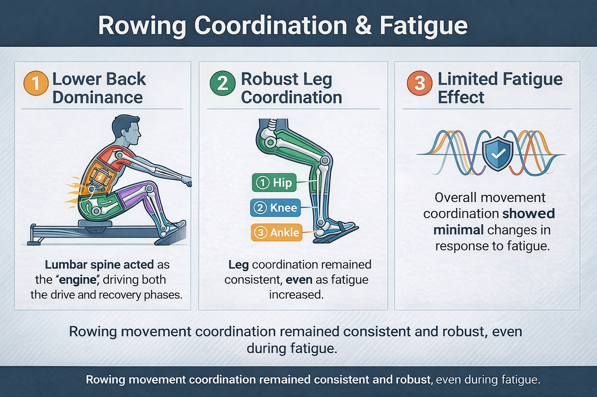

Lower back injuries are one of the most common issues in rowing, but we still don't have a great understanding of why. One piece of the puzzle is figuring out how rowers coordinate their body, and whether that coordination breaks down when they get tired. We had 20 participants complete a 2000m ergometer row while wearing motion sensors that tracked how their joints and body segments moved together in real time. We also tracked how fatigued they felt throughout the effort. Here's what was interesting: even though every rower reported getting significantly more fatigued over the course of the trial, their overall coordination patterns didn't meaningfully change. The lumbar spine and lower body showed consistent movement strategies from start to finish. That doesn't mean fatigue has no effect. It more likely means that people respond to fatigue differently, and those individual differences get washed out when you look at the group as a whole. It points to the need for more individualized approaches to understanding injury risk in rowing, rather than assuming everyone breaks down the same way.